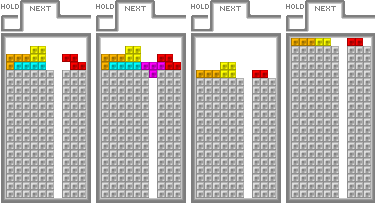
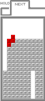
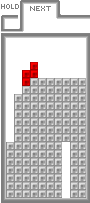
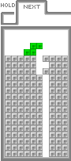
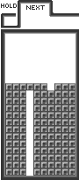
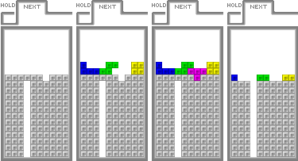
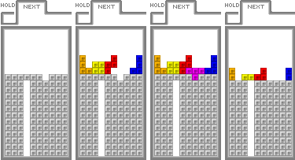

テトリスDSでの7つの戦略
ここでは、主にスタンダード2人での対戦の戦略について考える。
対象としている層は、ニンテンドーWi-Fiコネクション終了の直前までの時期で、テトリスDSのワールド、スタンダード2人で7000から7500程度のプレイヤーであるが、
これはあくまでも目安である。
また、ここに載せている内容を別の対戦型のテトリスに応用することも、多少は可能だと考えられる。
- ホールド
2005-12-18 - slappin’beats/613_blog(はるくのゲームログ。)のHOLDとNEXTの二択で積むときと、文字通りテトリミノを温存するときを使い分けられると便利。
特に、I(水色)を温存する考え方は重要。
なぜならば水色は、攻撃だけでなく防御にも活かすことができるからだ。具体的には相手から攻撃が送られてきたときに、水色が現在手(操作中)でなくても、相殺をしたいときはホールドボタンを押して棒を取り出し、テトリスをするだけで、瞬時に相殺をすることができる。
考え方としてはNEXTとHOLDと相殺外しについて : mkomizとテトリスも役に立つかもしれない。
例えば左の2つの図で、対戦相手から合計4ライン分の攻撃が飛んできた場合はどうなるだろう？
図1-1(左側の図)のように水色をホールドしていた場合は、ホールドを使って現在手を水色に変更し、テトリスをすることで相殺をすれば、ひとまず一命は取りとめることが可能だ。
しかし、図1-2(右側の図)のように黄色をホールドしていた場合は、現在手が水色でなければ窒息し、その場で負けとなってしまう。
このように、相殺をしたいと思った時に、すぐに水色を取り出せるかどうかが、生死を分けることもある。
- 相殺するかしないかの判断
相手画面を見る余裕がなく相殺したくないときは、自分側のフィールドが高く積み上がっていない状況で、相手からの攻撃を受けたときに攻撃とおぼえておこう。
既に棒(水色)をホールドしていれば、それを取り出してテトリスするだけ。
灰色のブロックの穴の位置が縦に揃っておらず、とても散らばっているなど、自分側のフィールドの状況が悪ければ、相殺をしたほうがよいことが多い(一概に多いとはいえない)。
- 不利な状況に持ち込まれたとき
とりあえず攻撃は危険なので、少し遅くなってもいいので状況を確かめる(=相手画面を見る)癖をつけよう。
また、T-Spinはテトリスよりも消去ライン数が少ない上、その構築にはある程度の難易度が伴うため、テトリスと同等以上のラインを消去したと思いがちだ。
しかし、T-Spinダブル(TSD)でさえテトリスと同じ攻撃量しかなく、その反面消去ライン数は半分しかない。防御の面から見るとTSDは非常に効率が悪い。
ゆえに、T-Spinは相殺ができなかったときは非常に危険。

図3-1 : TSDの直後に4ラインの攻撃を受けた形
左の例は、TSDを発生させ、その直後に相手から4ラインの攻撃を受けた様子を表した図(図3-1)である。
この例ではTSDを発生させ、先に攻撃してしまったがために、相手からの攻撃を受けてしまい、窒息・負けとなってしまった。
このようなことが起こらないよう、時間をかけてもいいので、相手の画面を確認してから攻撃するかどうかを決める癖をつけよう。
- 掘りやすい地形
棒(水色)で3,4段をまとめて消すのは言うまでもないが、L(橙色)やJ(青色)で3段まとめて消すことができる地形は掘りやすい。
また水色でテトリスをすることも多くの場合は良いことだし、相手に攻撃を送るために、テトリスができる形をつくるのはとても大事なことだ。
けれども、それを意識しすぎ、テトリスを2回以上打てる形にしてしまうと、相手から連続攻撃を受けた時は窮地に陥ってしまう。

図4-2 : 赤色を使いテトリスを2回打てる形を作った

図4-3 : 赤色を使いテトリス、トリプル、ダブルなどを打てる形を作った
図4-1のように、Z(赤色)がきたときのことを考えてみよう。
この例では、変わったことを考えない限り、次に示す図4-2か図4-3のような置き方が考えられると思う。
しかし、図4-2は受けを大きく狭めてしまっている。
これでは、下の灰色の部分にたどり着くために、水色が2つも必要となってしまい、ネクストとホールドの中に2つ水色がある場合以外は、無駄に多く積んでいくことを余儀なくされる。
サマフ氏のサイト : スマッシュダークライドの対戦の心得（中級編）の「穴の隣の列は低めに」などでも
同様のことが述べられているが、受けを狭めることは即ち勝利を遠ざけることなので、避けるようにしよう。
図4-3の状況では、テトリスだけでなく、トリプルやダブルを使って地形を低く保つことができる。地形を低く保つことができれば負けることはないのだ。
- 掘り
灰色のブロックやミスをした場所を消すとき、地形が高くない場合はできる限りまとめて消すよう意識し、相手に攻撃を送るようにしよう。
そうでない場合はできる限り早く、縦につながっている穴にたどり着けるよう意識することを心がけよう。
- 速度
早く積むことは確かに重要だが、それはミスをしないという前提に立ったものだ。
速度に自信を持つことは不要だと言い切ることはできないし、対戦の時に速度の差があまりにも大きすぎるとどうすることもできないが、無理に速度を上げることはミスを誘発しやすい。
なので、ひとつの大きなミスが命取りになることも多いこのゲームでは、常に最高速を出すよりも、ミスをしづらい速度で積むほうが良い。
またミスをした時でも、焦ってその上にブロックを積み上げないようにしよう。
- T-Spin(上級者向け)

図7-1 : TSTの消去だけで次の穴に辿り着ける例
T-Spinは基本的に上級者向けであり、無闇にT-Spinを行っていくことで地形が犠牲になってしまうことも多い。
「T-Spinを作っても地形をすぐに整えれば大丈夫」という考えは、他の対戦型のテトリスをプレイした後にテトリスDSに参入した人に多いと思われるが、そういった考えを持っていても、せり上がってきた灰色のブロック群の穴が思うようにならない時が多く、「地形をすぐに整える」ことの困難さを感じるかもしれない。
一応、図7-1のように組めば、その後の展開によっては良い形を作ることも可能だ(図7-2)。
しかし、これ以上のライン消去を挟むのなら、それは良くない形を作っているのだと思う。
特にT-Spinトリプルは、次の穴にたどりつけない場合以外は危険。たどりつけたときでも、フィールドの形が悪くなりやすいため油断は禁物。
T-Spinができた後の形を想像して、悪くなりそうだったら潔く諦める気持ちが大切だ。

図7-3 : 灰色ブロックを受けたときの形の例
また先ほどのもとの少しかぶるが、ライン消去の後の形を考え、ライン消去を挟んで組むT-Spin(いわゆる先読みT-Spin、予測型T-Spin)を実戦で使いこなすには、かなりのテクニックが必要。
その理由は、仮にライン消去を挟んで組むT-Spinを作ってみるとわかりやすい。
T-Spinが、常に思い通りに構築できるとは限らない。万が一、T(紫色)がネクストに無い(または直前に使ってしまった、これから使う予定)状況で、誤って組んでしまった場合は、大きな障害物を作ることになってしまう。

図7-4 : 図7-3の続きの展開の一例(良い例)

図7-5 : 図7-3の続きの展開の一例(悪い例)
図7-4の例では、ドネイトと呼ばれている技術によってT-Spinダブルを効率的に作っている。
この例ではT-Spinダブルを行ったあと、他のライン消去を挟むことなく灰色の縦につながった穴まで辿りつけている。
もし、この後の展開で相手から攻撃が送られてきた時でも、1や2で述べたようなホールドと相殺を意識することで、大きな打撃を受けることは少ない。
しかし、図7-5の例ではどうだろうか。
この例ではT-Spinダブルを行ったあと、他のライン消去を挟まなければ、灰色の縦につながった穴まで辿り着くことはできない。
図7-4の例に比べ、少なくとも1回のライン消去が余分に必要となってしまう。
この例ではラインを消し、灰色の部分にたどり着くまでに、少なくとも2つのテトリミノが必要になる(この箇所について図は準備しないが、参考までに説明すると、左側を埋めるのにL(橙色)、Z(赤色)、I(水色)またはT(紫色)(もしくはJ
(青色))、右側を1回で埋めるのにL(橙色)、T(紫色)またはJ(青色)が必要になる)。
もしここでI(水色)を使ってしまい、その後もI(水色)がホールドやネクストからなくなってしまった場合は、相殺が可能になるまでの時間が長くなりやすい。
相殺ができない状態は、つまり相手からの攻撃をすべて受けてしまうことを意味するので、出来る限り避けたほうがよい。